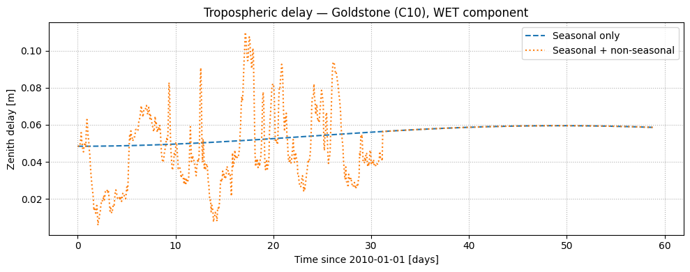
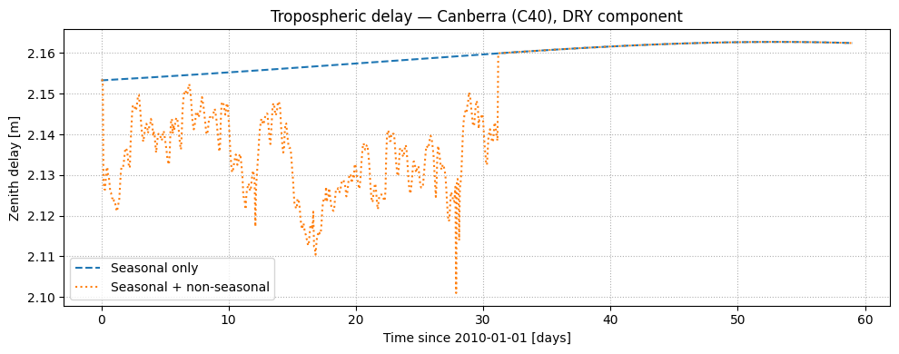
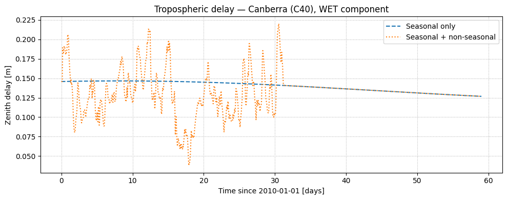
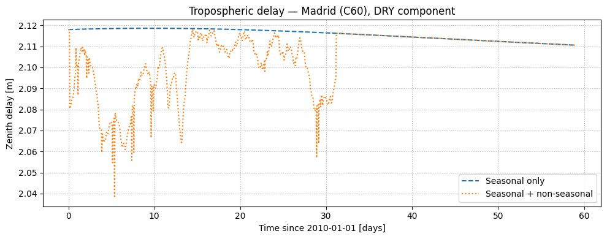
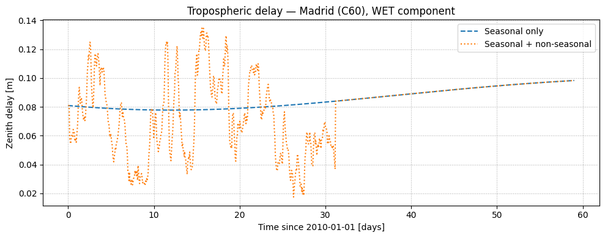
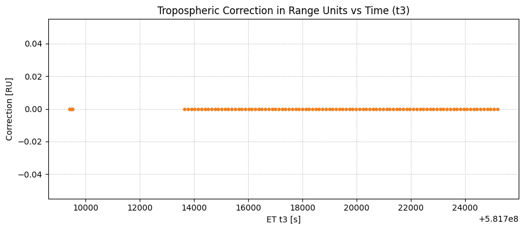
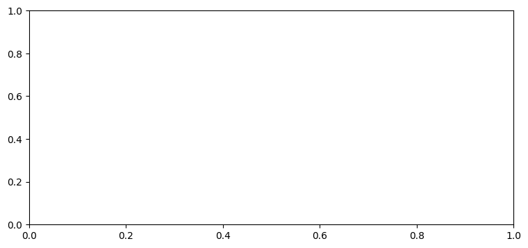

# OSIRIS-REx Tutorial Series Pt 2: Media Corrections & Ramp Tables#
Scarabaeus | Last revised 2026
Objectives#
This is the second of a five-part tutorial series that walks through a complete orbit determination (OD) scenario within Scarabaeus (SCB) using real data from the OSIRIS-REx mission. In part two, you will:
Understand how SCB models tropospheric signal delay using seasonal and non-seasonal components stored in JSON correction files
Query tropospheric delays for individual ground stations and arbitrary time spans using
MediaCorrectionsEvaluate the Chao elevation mapping function, which projects the zenith delay to a slant path at a given elevation angle
Load and inspect DSN ramp table records using
RampTableManager, and compute integrated uplink frequency sensitivity as a function of count intervalApply full round-trip light-time (RTLT) media corrections to real sequential ranging measurements, converting the path-length error to seconds and Range Units (RU)
See Also#
1.0 — Load SCB and the relevant Python packages#
Before doing anything else, import the libraries the tutorial depends on:
``scarabaeus`` — the main OD library, aliased to
scbthroughout for brevity.``numpy`` — array mathematics.
``pandas`` — tabular data handling, used in Section 4 to parse uplink frequency records.
``matplotlib`` — plotting library.
[1]:
import os
import numpy as np
import pandas as pd
import matplotlib.pyplot as plt
import supplementary as supp
import scarabaeus as scb
kg, km, sec, unitless = scb.Units.get_units(["kg", "km", "sec", "unitless"])
(J2000, ITRF93, ECLIPJ2000, IAUEARTH) = scb.Frame.generate_common_frames()
1.1 — Initialize units, frames, and SPICE kernels#
Units and Frames#
As in Part 1, physical units are retrieved by name with scb.Units.get_units() and reference frames with scb.Frame.generate_common_frames(). All three tutorial sections in this notebook use the same unit and frame objects, so they are created once here and reused throughout.
SPICE Kernels#
scb.SpiceManager.load_kernel_from_mkfile() furnishes the full set of SPICE kernels for the OSIRIS-REx scenario (SPK trajectories, PCK body constants, LSK leap-second, and frame kernels). A single metakernel file lists them all.
Ground Stations#
Three DSN complexes are used to illustrate how media corrections vary by site:
Variable |
DSN ID |
Complex |
Location |
|---|---|---|---|
|
DSS-24 |
Goldstone |
California, USA |
|
DSS-35 |
Canberra |
Australia |
|
DSS-65 |
Madrid |
Spain |
Each scb.GroundStation object looks up the station’s ECEF coordinates and SPICE ID from the loaded kernels.
[2]:
# load tutorial data
data = supp.load_data()
# load kernels
scb.SpiceManager.clear_kernels()
scb.SpiceManager.load_kernel_from_mkfile(data.OREx_real_data_mk.path)
# Ground stations (one per DSN complex)
GS_C10 = scb.GroundStation("DSS-24") # Goldstone, California
GS_C40 = scb.GroundStation("DSS-35") # Canberra, Australia
GS_C60 = scb.GroundStation("DSS-65") # Madrid, Spain
SCB supplementary data up to date.
2.0 — Tropospheric Delay Models#
Radio signals traveling between a DSN ground station and a deep-space spacecraft must pass through Earth’s troposphere. The neutral atmosphere introduces a non-dispersive path-length delay that is independent of signal frequency and must be modeled and subtracted from the raw observations before they can be used for orbit determination.
SCB decomposes the zenith tropospheric delay into two additive components stored in separate JSON correction files:
Component |
File |
Model function |
|---|---|---|
Seasonal |
|
|
Non-seasonal |
|
|
Both files contain a nested dictionary keyed by site (C10, C40, C60) and wet/dry component (WET, DRY). The static method MediaCorrections.get_media_data_for_et() retrieves the coefficient sub-dictionary that brackets a given epoch.
2.1 — Single-station, single-component query#
The simplest usage pattern is a single query: one station, one epoch, one component (wet or dry).
get_media_data_for_et() returns the coefficient dictionary valid at the query epoch. That dictionary is then passed to the appropriate functional model:
mediafun_trig(aux_data, et)— evaluates the seasonal trigonometric model atet, returning a delay in metersmediafun_nrmpow(aux_data, et)— evaluates the non-seasonal normalized power-law model, also in meters
[3]:
# load tutorial data
data = supp.load_data()
# load kernels
scb.SpiceManager.clear_kernels()
scb.SpiceManager.load_kernel_from_mkfile(data.OREx_real_data_mk.path)
# Load tropospheric correction files
tropo_seasonal_path = data.tropo_seasonal_new.path
tropo_nonseasonal_path = data.tropo_nonseasonal.path
#tropo_seasonal_path = "data/measurements/media_correction/1972_001_2048_001_tro_modified.json"
#tropo_nonseasonal_path = "data/measurements/media_correction/2010_001_2010_032_tro.json"
tropo_seasonal_dict = scb.Utils.load_json(tropo_seasonal_path)
tropo_dict = scb.Utils.load_json(tropo_nonseasonal_path)
# Query parameters
query_utc = "2010-01-15 00:07:00 UTC"
query_site = "C60" # "C10" | "C40" | "C60"
query_wetordry = "DRY" # "DRY" | "WET"
# Convert UTC to SPICE ephemeris time
query_et = scb.SpiceManager.utc2et(query_utc)
# Retrieve coefficient sub-dictionaries for the query epoch
aux_seasonal = scb.MediaCorrections.get_media_data_for_et(
tropo_seasonal_dict["aux_tropo"], query_site, query_wetordry, query_et
)
aux_non_seasonal = scb.MediaCorrections.get_media_data_for_et(
tropo_dict["aux_tropo"], query_site, query_wetordry, query_et
)
# Evaluate delay models (result in meters)
delta_m_seasonal = scb.MediaCorrections.mediafun_trig(aux_seasonal, query_et)
delta_m_non_seasonal = scb.MediaCorrections.mediafun_nrmpow(aux_non_seasonal, query_et)
print(f"Query: {query_utc} | Site: {query_site} | Component: {query_wetordry}")
print(f"Seasonal delay: {delta_m_seasonal:.6f} m")
print(f"Non-seasonal delay: {delta_m_non_seasonal:.6f} m")
print(f"Total zenith delay: {delta_m_seasonal + delta_m_non_seasonal:.6f} m")
SCB supplementary data up to date.
Query: 2010-01-15 00:07:00 UTC | Site: C60 | Component: DRY
Seasonal delay: 2.118438 m
Non-seasonal delay: -0.012684 m
Total zenith delay: 2.105753 m
2.2 — Multi-station time-series#
In practice, media corrections must be evaluated at every measurement epoch across all active ground stations. The nested loop below sweeps over:
Sites — the three DSN complexes (
C10,C40,C60)Wet/dry components — both the dry (hydrostatic) and wet (water-vapor) parts of the zenith delay
Time — 1 000 evenly spaced epochs spanning January–February 2010
The result arrays delta_m_seasonal[site, component, time] and delta_m_non_seasonal[site, component, time] hold the zenith delay in meters. A guard (if aux_data else 0.0) is included for epochs that fall outside the file’s coverage window.
[4]:
# Time span: Jan 1 – Feb 28, 2010
t_start_et = scb.SpiceManager.utc2et("2010-01-01 00:00:00 UTC")
t_end_et = scb.SpiceManager.utc2et("2010-02-28 23:59:00 UTC")
timespan_et = np.linspace(t_start_et, t_end_et, 1000)
timespan_days = (timespan_et - timespan_et[0]) / 86400.0
queries_site = ["C10", "C40", "C60"]
queries_wetdry = ["DRY", "WET"]
S, W, T = len(queries_site), len(queries_wetdry), len(timespan_et)
delta_m_seasonal = np.zeros((S, W, T))
delta_m_non_seasonal = np.zeros((S, W, T))
for si, site in enumerate(queries_site):
for wi, wd in enumerate(queries_wetdry):
for ti, et in enumerate(timespan_et):
aux_s = scb.MediaCorrections.get_media_data_for_et(
tropo_seasonal_dict["aux_tropo"], site, wd, et
)
aux_n = scb.MediaCorrections.get_media_data_for_et(
tropo_dict["aux_tropo"], site, wd, et
)
delta_m_seasonal[si, wi, ti] = scb.MediaCorrections.mediafun_trig(aux_s, et) if aux_s else 0.0
delta_m_non_seasonal[si, wi, ti] = scb.MediaCorrections.mediafun_nrmpow(aux_n, et) if aux_n else 0.0
# Plot one panel per site × component
site_labels = {"C10": "Goldstone (C10)", "C40": "Canberra (C40)", "C60": "Madrid (C60)"}
for si, site in enumerate(queries_site):
for wi, wd in enumerate(queries_wetdry):
fig, ax = plt.subplots(figsize=(10, 4))
ax.plot(timespan_days, delta_m_seasonal[si, wi, :],
label="Seasonal only", linestyle="--")
ax.plot(timespan_days, delta_m_non_seasonal[si, wi, :] + delta_m_seasonal[si, wi, :],
label="Seasonal + non-seasonal", linestyle=":")
ax.set_xlabel("Time since 2010-01-01 [days]")
ax.set_ylabel("Zenith delay [m]")
ax.set_title(f"Tropospheric delay — {site_labels[site]}, {wd} component")
ax.grid(True, linestyle=":")
ax.legend()
plt.tight_layout()
plt.show()






2.3 — Elevation mapping functions#
The zenith delays computed above apply only when the signal travels straight up. For any real ground-station-to-spacecraft link, the signal travels at a slant angle, increasing the path length through the atmosphere. The mapping function m(E) converts the zenith delay δ_z to a slant delay δ_s:
δ_s = m(E) × δ_z
SCB implements the Chao (1972) mapping function via MediaCorrections.chao_mapping(elevation_rad), which returns separate dry and wet mapping factors. Both approach 1.0 at zenith (90°) and grow rapidly toward the horizon where the signal path through the atmosphere is longest.
Note: Measurements at very low elevation angles (below ~10°) are typically excluded in OD processing because the mapping function uncertainty becomes large and multipath effects increase.
[5]:
# Evaluate Chao mapping functions over full elevation range
E_rad = np.linspace(0, np.pi / 2, 200)
dry_mapping = np.empty_like(E_rad)
wet_mapping = np.empty_like(E_rad)
for i, el in enumerate(E_rad):
dry_mapping[i], wet_mapping[i] = scb.MediaCorrections.chao_mapping(el)
fig, ax = plt.subplots(figsize=(8, 4))
ax.plot(np.degrees(E_rad), dry_mapping, label="Dry mapping", linestyle="--")
ax.plot(np.degrees(E_rad), wet_mapping, label="Wet mapping", linestyle=":")
ax.set_xlabel("Elevation angle [deg]")
ax.set_ylabel("Mapping function [-]")
ax.set_title("Chao (1972) Tropospheric Mapping Functions")
ax.grid(True, linestyle=":")
ax.legend()
plt.tight_layout()
plt.show()

3.0 — Ramp Table Manager#
DSN uplink signals are not always transmitted at a constant frequency. When a ramp is in effect, the exciter steps through a pre-programmed frequency-vs-time schedule stored in the tracking data as a ramp table (SFDU record type 9). Each ramp table entry records:
Field |
Description |
|---|---|
|
Second-of-day at which the ramp interval begins |
|
Day-of-year of the ramp interval |
|
Exciter frequency at the start of the interval [Hz] |
|
Linear frequency rate during the interval [Hz/s] |
|
Integer flag identifying the ramp mode |
The scb.RampTableManager.integrate() method integrates the piecewise-linear frequency profile between two epochs (t1, t3) and returns the total accumulated phase, which is needed to correctly compute Doppler and sequential ranging observables when the uplink is ramped.
3.1 — Loading and inspecting ramp table data#
The ramp table is extracted from the aux_SFDU_9 block of a standard SCB tracking JSON file. The five fields above are assembled into the ramp_data list expected by RampTableManager.integrate().
[6]:
#json_name = "orex_beno_2016_282_122040_2016_282_211501_24"
trk_file_path = data.trk_file.path
trk_data = scb.Utils.load_json(trk_file_path)
# Assemble ramp table list in the format expected by RampTableManager
ramp_data = [
trk_data["aux_SFDU_9"]["sec"],
trk_data["aux_SFDU_9"]["doy"],
trk_data["aux_SFDU_9"]["ramp_freq"],
trk_data["aux_SFDU_9"]["ramp_rate"],
trk_data["aux_SFDU_9"]["ramp_type"],
]
# Visualize the ramp table contents
fig, axes = plt.subplots(4, 1, figsize=(10, 10), sharex=True)
axes[0].plot(trk_data["aux_SFDU_9"]["sec"], trk_data["aux_SFDU_9"]["doy"], "co-")
axes[0].set_ylabel("Ramp day of year")
axes[1].plot(trk_data["aux_SFDU_9"]["sec"], trk_data["aux_SFDU_9"]["ramp_freq"], "bo-")
axes[1].set_ylabel("Ramp frequency [Hz]")
axes[2].plot(trk_data["aux_SFDU_9"]["sec"], trk_data["aux_SFDU_9"]["ramp_rate"], "ro-")
axes[2].set_ylabel("Ramp rate [Hz/s]")
axes[3].plot(trk_data["aux_SFDU_9"]["sec"], trk_data["aux_SFDU_9"]["ramp_type"], "go-")
axes[3].set_ylabel("Ramp type (int)")
axes[3].set_xlabel("Time as seconds of day [s]")
for ax in axes:
ax.grid(True, which="both", linestyle="--", linewidth=0.5)
ax.minorticks_on()
fig.suptitle(f"Ramp Table Contents", fontsize=11)
plt.tight_layout()
plt.show()

3.2 — Integrated frequency sensitivity#
The integrated uplink frequency between times t1 and t3 is needed to convert a sequential ranging observable (in Range Units) to a time-of-flight. To understand the sensitivity of that integral to the choice of count interval Δt = t3 − t1, we evaluate RampTableManager.integrate() at 13 logarithmically spaced offsets from t1 — spanning nanoseconds to thousands of seconds.
The result is scaled by RU = 0.147530040053405 (the Range Unit conversion factor for this pass), giving the accumulated phase in Range Units as a function of integration length.
Key insight: The log-log plot reveals how quickly the integrated frequency accumulates. A slope of 1 indicates that the frequency is approximately constant over the interval — i.e., the ramp rate is negligible at that timescale.
[7]:
# Hard-coded constants for the orex_beno_2016_282_122040_2016_282_211501_24 pass
RU = 0.147530040053405 # Range Unit conversion factor
t1_sec = 48660 # Reference epoch (sec of day)
t1_doy = 282
t3_doy = t1_doy
delta_t = 10 ** np.arange(-9, 4, dtype=float) # 13 log-spaced offsets [s]
t3_sec_array = t1_sec + delta_t
f_int_RU = []
for t3_sec in t3_sec_array:
f_int, _ = scb.RampTableManager.integrate(
ramp_data, t1_sec, t3_sec, t1_doy, t3_doy
)
f_int_RU.append(RU * f_int)
f_int_RU = np.array(f_int_RU)
fig, ax = plt.subplots(figsize=(8, 5))
ax.loglog(delta_t, f_int_RU, "ko-")
ax.set_xlabel("Δt from t1 [s]")
ax.set_ylabel("Integrated frequency [RU]")
ax.set_title("Integrated Frequency Sensitivity vs. Count Interval")
ax.grid(True, which="both", linestyle="--", linewidth=0.5)
ax.minorticks_on()
plt.tight_layout()
plt.show()

4.0 — RTLT Media Corrections for Sequential Ranging#
In the previous section, we computed the zenith tropospheric delay — the path-length error for a signal traveling straight up through the atmosphere. When applying corrections to real measurements, we need the round-trip light-time (RTLT) delay, which accounts for both the uplink leg (ground → spacecraft, at transmit time t1) and the downlink leg (spacecraft → ground, at receive time t3).
The workflow is:
Load a tracking data file and identify the ground station
Extract the receive epochs
t3from the sequential ranging observableCompute the transmit epochs
t1using a quick RTLT estimate from SPICEEvaluate
media_correction.computed_rtlt_delays()at botht1andt3Add the two one-way delays to get the total RTLT media correction
Convert from meters → seconds (via the speed of light) → Range Units (via the uplink carrier frequency)
This corrected delay is subtracted from the raw sequential ranging observable before it is used in the OD filter.
4.1 — Load tracking data and set up the ground station#
The tracking file used here is a two-way pass from DSS-24 (Goldstone) acquired on 2017 day-of-year 346. The file contains both the sequential ranging (2W_sranging) and Doppler (2W_doppler) observables, though only the ranging measurements are processed in this section.
MediaCorrections is initialized with a reference to the ground station and the path to the seasonal tropospheric correction file. The non-seasonal file path is resolved later (in Section 4.3) once the exact pass date is known.
[8]:
trk_file_path = data.trk_file.path #"data/measurements/radiometric/orex_beno_2017_346_093131_2017_346_144501_24.json"
tropo_seasonal_path = data.tropo_seasonal_new.path #"data/measurements/media_correction/1972_001_2048_001_tro_modified.json"
tropo_file_bucket = "data/measurements/media_correction"
# Read tracking data and identify the ground station
trk_data = scb.Utils.load_json(trk_file_path)
DSS_name = "DSS-" + str(trk_data["2W_doppler"]["spice_id"][0])
GS1 = scb.GroundStation(DSS_name)
print("Ground station:", DSS_name)
# Build the uplink frequency array from the ramp table (used for RU conversion)
uplink_carrier_df = pd.DataFrame.from_dict(trk_data["aux_SFDU_0"], orient="index").transpose()
frequency_values = pd.Series(uplink_carrier_df["ramp_freq"].reset_index(drop=True))
frequency_array = scb.ArrayWUnits(np.array(frequency_values), sec**-1)
# Create MediaCorrections object (seasonal file loaded now; non-seasonal set in 4.3)
media_correction = scb.MediaCorrections(
name="GS1 SRA Media Corrections",
instrument=GS1,
tropo_seasonal_file_path=tropo_seasonal_path,
)
# Create the sequential ranging model and extract observed t3 epochs
SRA_model = scb.SequentialRangingReal("GS1 SRA Model", GS1)
SRA_t3, meas_sec, meas_obs, meas_outliers = SRA_model.observed_measurements(
trk_file_path, meas_name="2W_sranging"
)
print(f"Sequential ranging observations: {len(SRA_t3.times.values)}")
Ground station: DSS-35
Sequential ranging observations: 99
4.2 — Compute transmit epochs t1#
The sequential ranging observable is tagged at the receive time t3. The transmit time t1 (when the uplink tone left the ground station) must be estimated for the uplink media correction. A two-step SPICE light-time computation gives a good approximation:
Compute the downlink one-way light time at
t3— the time for the signal to travel from the spacecraft to the ground station.Subtract the downlink light time from
t3to get the approximate spacecraft time, then compute the uplink one-way light time back to the station.The RTLT is the sum of the two, and
t1 = t3 − RTLT.
[9]:
target = "-64" # OSIRIS-REx NAIF ID
frame = ITRF93
# Downlink one-way light time: spacecraft → ground at t3
dl_rtlt = scb.SpiceManager.get_lighttime(
trgt_bdy=target,
epoch_time=SRA_t3.times.values,
reference_frame=frame.name,
obsvr_bdy=GS1.name,
aberration_correction="CN+S",
)
# Uplink one-way light time: ground → spacecraft (at the epoch when signal arrived)
ul_rtlt = scb.SpiceManager.get_lighttime(
trgt_bdy=GS1.name,
epoch_time=SRA_t3.times.values - dl_rtlt.values,
reference_frame=frame.name,
obsvr_bdy=target,
aberration_correction="CN+S",
)
rtlt = ul_rtlt.values + dl_rtlt.values
SRA_t1_array = SRA_t3.times.values - rtlt
SRA_t1_epoch = scb.EpochArray(SRA_t1_array, sys="TDB")
print(f"Mean RTLT: {np.mean(rtlt)/60:.2f} min | Range: [{np.min(rtlt)/60:.2f}, {np.max(rtlt)/60:.2f}] min")
Mean RTLT: 6.08 min | Range: [6.07, 6.08] min
4.3 — Resolve the non-seasonal correction file and compute elevation angles#
The non-seasonal tropospheric correction file is specific to each year and day-of-year. MediaCorrections.find_tro_metadata() scans the correction file bucket and returns the file whose coverage window contains the pass date, which is extracted from the first t3 epoch.
Elevation angles at each t3 epoch are computed with SpiceManager.get_elevation_angle(). The elevation angle is needed in Section 4.4 to apply the Chao mapping function, and it is also a useful diagnostic — passes near the horizon (low elevation) have much larger and more uncertain media corrections.
[10]:
# Find the non-seasonal correction file for this pass
year_q, day_q, _ = scb.SpiceManager.et2YDS([SRA_t3.times.values[0]])
metadata_tropo = scb.MediaCorrections.find_tro_metadata(tropo_file_bucket, year_q[0], day_q[0])
media_correction.tropo_non_seasonal_file_path = os.path.join(
tropo_file_bucket, metadata_tropo["file"]
)
print("Non-seasonal file:", metadata_tropo["file"])
# Elevation angles at each t3 epoch
rad_unit = scb.Units.get_units(["rad"])
SRA_elevation_angles = []
for et in SRA_t3.times.values:
el_awu = scb.SpiceManager.get_elevation_angle(
target=target,
et=et,
station=DSS_name,
abcorr="LT+S",
)
el_rad = scb.ArrayWUnits.get_value_in_target_units(el_awu, rad_unit)
SRA_elevation_angles.append(np.degrees(el_rad))
SRA_elevation_angles = np.array(SRA_elevation_angles)
print(f"Elevation angle range: {SRA_elevation_angles.min():.1f}\u00b0 \u2013 {SRA_elevation_angles.max():.1f}\u00b0")
---------------------------------------------------------------------------
FileNotFoundError Traceback (most recent call last)
Cell In[10], line 3
1 # Find the non-seasonal correction file for this pass
2 year_q, day_q, _ = scb.SpiceManager.et2YDS([SRA_t3.times.values[0]])
----> 3 metadata_tropo = scb.MediaCorrections.find_tro_metadata(tropo_file_bucket, year_q[0], day_q[0])
4 media_correction.tropo_non_seasonal_file_path = os.path.join(
5 tropo_file_bucket, metadata_tropo["file"]
6 )
7 print("Non-seasonal file:", metadata_tropo["file"])
File ~/scarabaeus/.venv/lib/python3.11/site-packages/scarabaeus/measurements/MediaCorrections.py:373, in MediaCorrections.find_tro_metadata(folder, query_year, query_doy)
369 pat = re.compile(
370 r"(?P<y1>\d{4})_(?P<d1>\d{3})_(?P<y2>\d{4})_(?P<d2>\d{3})_tro\.json$"
371 )
372 metadata: List[Dict] = []
--> 373 for fname in os.listdir(folder):
374 m = pat.match(fname)
375 if not m:
FileNotFoundError: [Errno 2] No such file or directory: 'data/measurements/media_correction'
4.4 — Compute RTLT tropospheric delays#
media_correction.computed_rtlt_delays() evaluates the full tropospheric model (seasonal + non-seasonal, dry + wet, with Chao mapping applied) at a given ephemeris time and returns the one-way path-length correction in meters.
The RTLT correction is the sum of the corrections at t3 (downlink) and t1 (uplink):
Δp [m] = Δp(t3) + Δp(t1)
Δτ [s] = Δp [m] × 10⁻³ / c (Moyer eq. 10-27, converting km → m → s)
ΔΦ [RU] = Δτ [s] × f_uplink [Hz]
where c is the speed of light in km/s from scb.constants.c.
[11]:
SRA_tropo_t3 = []
SRA_tropo_t1 = []
for ii in range(len(SRA_t3.times.values)):
t3 = SRA_t3.times.values[ii]
t1 = SRA_t1_epoch.times.values[ii]
p_t3 = media_correction.computed_rtlt_delays(query_time_et=t3, target_spice_id=target)
p_t1 = media_correction.computed_rtlt_delays(query_time_et=t1, target_spice_id=target)
SRA_tropo_t3.append(p_t3)
SRA_tropo_t1.append(p_t1)
SRA_tropo_t3 = np.array(SRA_tropo_t3)
SRA_tropo_t1 = np.array(SRA_tropo_t1)
# RTLT path-length correction [m]
SRA_delta_m = SRA_tropo_t3 + SRA_tropo_t1
# Convert to RTLT time correction [s] (Moyer 10-27: 1e-3 converts m → km)
SRA_delta_rtlt = (1.0 / scb.constants.c.values) * (SRA_delta_m * 1e-3)
# Convert to Range Units
SRA_delta_RU = SRA_delta_rtlt * frequency_array[0].values
print(f"Mean RTLT tropo correction: {np.mean(SRA_delta_rtlt)*1e6:.3f} μs / {np.mean(SRA_delta_RU):.4f} RU")
Mean RTLT tropo correction: 0.000 μs / 0.0000 RU
4.5 — Results and plots#
Five plots summarize the media correction output for this pass:
RTLT correction vs time (t3) — how the total delay evolves over the pass
Path-length correction vs time — same information in meters
Range Unit correction vs time — the operationally relevant quantity subtracted from the raw observable
RTLT correction vs elevation angle — shows the expected increase toward the horizon
Elevation angle vs time — pass geometry reference
[12]:
fig, ax = plt.subplots(figsize=(9, 4))
ax.plot(SRA_t3.times.values, SRA_delta_rtlt * 1e6, ".")
ax.set_xlabel("ET t3 [s]")
ax.set_ylabel("RTLT correction [μs]")
ax.set_title("Tropospheric RTLT Correction vs Time (t3)")
ax.grid(True, linestyle=":")
plt.tight_layout()
plt.show()
fig, ax = plt.subplots(figsize=(9, 4))
ax.plot(SRA_t3.times.values, SRA_delta_m, ".")
ax.set_xlabel("ET t3 [s]")
ax.set_ylabel("Path-length correction [m]")
ax.set_title("Tropospheric Path-Length Correction vs Time (t3)")
ax.grid(True, linestyle=":")
plt.tight_layout()
plt.show()
fig, ax = plt.subplots(figsize=(9, 4))
ax.plot(SRA_t3.times.values, SRA_delta_RU, ".")
ax.set_xlabel("ET t3 [s]")
ax.set_ylabel("Correction [RU]")
ax.set_title("Tropospheric Correction in Range Units vs Time (t3)")
ax.grid(True, linestyle=":")
plt.tight_layout()
plt.show()
fig, ax = plt.subplots(figsize=(9, 4))
ax.plot(SRA_elevation_angles, SRA_delta_rtlt * 1e6, ".")
ax.set_xlabel("Elevation angle [deg]")
ax.set_ylabel("RTLT correction [μs]")
ax.set_title("Tropospheric RTLT Correction vs Elevation Angle (at t3)")
ax.grid(True, linestyle=":")
plt.tight_layout()
plt.show()
fig, ax = plt.subplots(figsize=(9, 4))
ax.plot(SRA_t3.times.values, SRA_elevation_angles, ".")
ax.set_xlabel("ET t3 [s]")
ax.set_ylabel("Elevation angle [deg]")
ax.set_title("Ground Station Elevation Angle vs Time (t3)")
ax.grid(True, linestyle=":")
plt.tight_layout()
plt.show()



---------------------------------------------------------------------------
NameError Traceback (most recent call last)
Cell In[12], line 29
26 plt.show()
28 fig, ax = plt.subplots(figsize=(9, 4))
---> 29 ax.plot(SRA_elevation_angles, SRA_delta_rtlt * 1e6, ".")
30 ax.set_xlabel("Elevation angle [deg]")
31 ax.set_ylabel("RTLT correction [μs]")
NameError: name 'SRA_elevation_angles' is not defined
